Guía paso a paso para traducir cómics, manga y webtoons con PaneLingo: de la página escaneada a la página traducida, lista para publicar.
ESPERA. ESTA FRASE NO ES ASÍ.
¡TZONK!
Cada viñeta hereda el contexto de la anterior.
Versión 3.0 · Producto finalProyecto Integrador 2 · Sprint 3 · Noviembre de 2026
La página entera como contextono globos sueltos
Contenido
Índice
01Bienvenida a PaneLingoQué es y cómo funciona
02Primeros pasosCuenta, acceso y contraseña
03La bibliotecaResumen, búsqueda y filtros
04ÁlbumesCrear, editar, archivar y eliminar
05Cargar páginasFormatos y recomendaciones
06Detectar y corregir el textoOCR y regiones
07Traducir y aprobarTraducción asistida por IA
08Limpiar y maquetar la páginaEdición de imagen
09Exportar el resultadoDOCX o PNG en un ZIP
10Estados y progresoQué significa cada etiqueta
11Uso en el celular y accesibilidadTeclado y pantallas pequeñas
12Preguntas frecuentesProblemas comunes y soluciones
ConsejoSi es tu primera vez, lee los capítulos 1 y 2 y luego sigue el recorrido completo de los capítulos 4 a 9 con una página de prueba: en unos 15 minutos tendrás tu primera página traducida.
1
Capítulo 1
Bienvenida a PaneLingo
PaneLingo es una plataforma web para traductores de cómics, manga y webtoons. Reúne en un solo lugar lo que antes exigía varias herramientas: organizar el trabajo por obras, leer el texto de las páginas, proponer una traducción con inteligencia artificial, revisarla y devolverla a la página.
La idea central es que la unidad de trabajo es la página completa, no el globo suelto. La IA lee todas las viñetas en orden de lectura, con las onomatopeyas y el tono de los personajes, y propone cada traducción sabiendo lo que vino antes. Tú siempre tienes la última palabra: nada se da por bueno hasta que lo apruebas.
El recorrido de una página
1CargarSube las páginas escaneadas a un álbum.
2DetectarEl OCR encuentra y lee cada texto.
3CorregirRevisa lo que el OCR leyó con dudas.
4TraducirLa IA propone; tú editas y apruebas.
5MaquetarBorra el original y coloca la traducción.
6ExportarDescarga un DOCX o las páginas en PNG.
Para quién es
Traductores independientes y scanlators
Personas que traducen obras por encargo o por afición y necesitan ordenar muchas páginas y entregar un guion o la página final.
Editoriales y estudios pequeños
Equipos que quieren acelerar la primera versión de la traducción sin renunciar a la revisión humana de cada texto.
Qué necesitas
Un computador o celular con un navegador actualizado (Chrome, Edge, Firefox o Safari).
Conexión a internet y la dirección de PaneLingo: https://13-185-1-92.sslip.io
Las páginas en imagen JPG, PNG o WEBP, de hasta 10 MB cada una.
PrivacidadTus álbumes y páginas son privados: solo tu cuenta puede verlos. Ni siquiera las imágenes tienen una dirección pública; se entregan únicamente cuando inicias sesión.
2
Capítulo 2
Primeros pasos
Crear una cuenta
Abre PaneLingo y elige la pestaña Crear cuenta.
Escribe tu nombre completo y tu correo electrónico.
Elige una contraseña de al menos 8 caracteres y repítela. El medidor te indica si es segura.
Acepta los términos y pulsa Crear cuenta. Entrarás directamente a tu biblioteca.
ConsejoEvita contraseñas parecidas a tu nombre o correo, o solo numéricas: PaneLingo las rechaza para proteger tu trabajo.
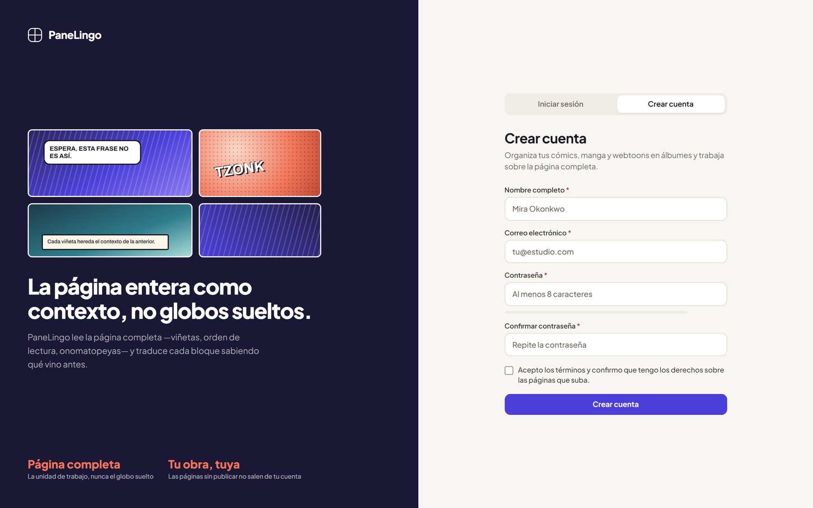
Iniciar sesión
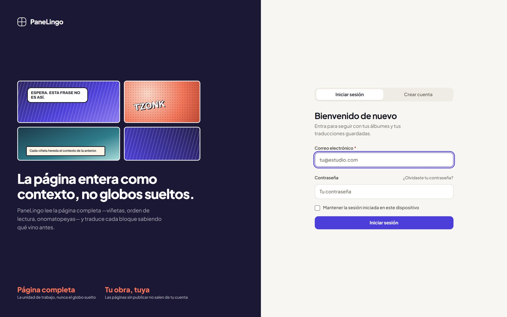
1234
1Pestañas para pasar de iniciar sesión a crear una cuenta.
2Tu correo y tu contraseña.
3¿Olvidaste tu contraseña? abre la recuperación.
4Marca Mantener la sesión iniciada solo en un equipo propio.
Recuperar la contraseña
En la pantalla de inicio de sesión pulsa ¿Olvidaste tu contraseña?, escribe tu correo y pulsa Enviar enlace.
Abre el enlace que recibes. Por seguridad caduca en una hora y solo sirve una vez.
Escribe la nueva contraseña dos veces. Al guardarla, se cierran las sesiones abiertas en otros dispositivos.
ImportanteEn la versión académica el correo de recuperación no se envía por internet: lo recibe el administrador del servidor. Si lo necesitas, pide el enlace al equipo de PaneLingo.
Cerrar sesión
Abre el menú de tu perfil, en la esquina inferior izquierda, y elige Cerrar sesión. En el celular, el botón está en la barra inferior. Al salir, el navegador deja de mostrar tus páginas aunque uses el botón Atrás.
3
Capítulo 3
La biblioteca
Es tu pantalla de inicio. De un vistazo ves cuánto trabajo tienes, en qué ibas y el estado de cada álbum.
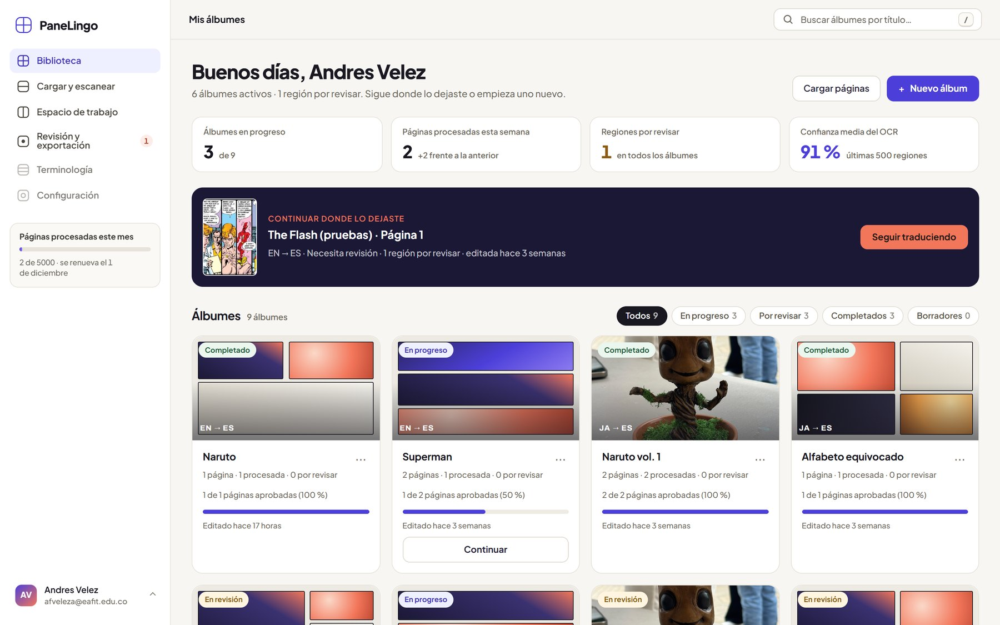
12345678
1Menú principal: biblioteca, carga de páginas, espacio de trabajo y revisión y exportación. El número rojo indica las regiones que esperan tu revisión.
2Búsqueda: filtra los álbumes por título mientras escribes. Pulsa / para ir a ella.
3Cargar páginas y Nuevo álbum.
4Resumen: álbumes en progreso, páginas procesadas en la semana, regiones por revisar y confianza media del OCR.
5Cuota del mes: páginas procesadas frente al límite del servicio de lectura de texto.
6Continuar donde lo dejaste: te lleva a la última página y región en que trabajaste, incluso desde otro dispositivo.
7Filtros por estado: todos, en progreso, por revisar, completados y borradores.
8Tarjeta de álbum: idiomas, páginas, regiones por revisar, progreso por páginas aprobadas y el menú ···.
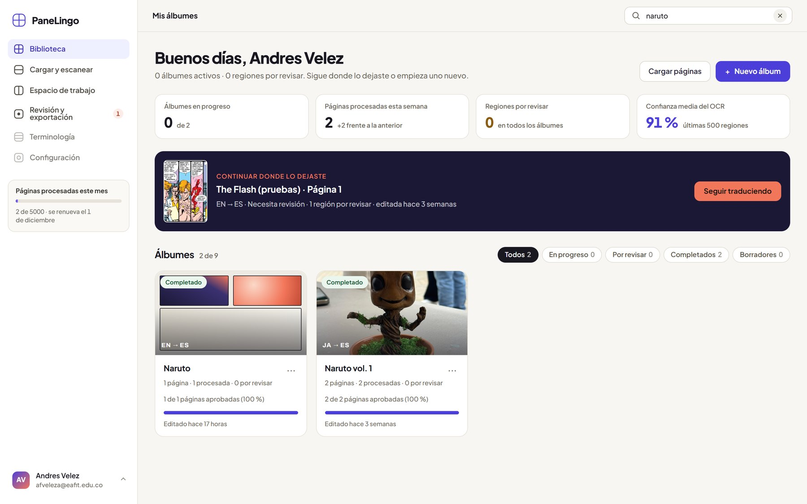
Búsqueda por título: «naruto».
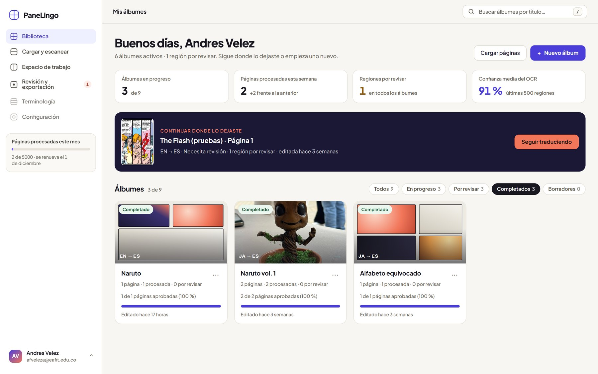
Filtro «Completados».
4
Capítulo 4
Álbumes
Un álbum agrupa las páginas de una obra (un tomo, un capítulo o un webtoon) con su idioma de origen y de destino.
Crear un álbum
En la biblioteca pulsa + Nuevo álbum.
Escribe el título de la obra.
Elige el idioma de origen (japonés, coreano, chino simplificado, inglés…) y el de destino. Deben ser distintos.
Opcional: sube una portada. Sin portada se muestra una ilustración por defecto.
Pulsa Crear álbum.
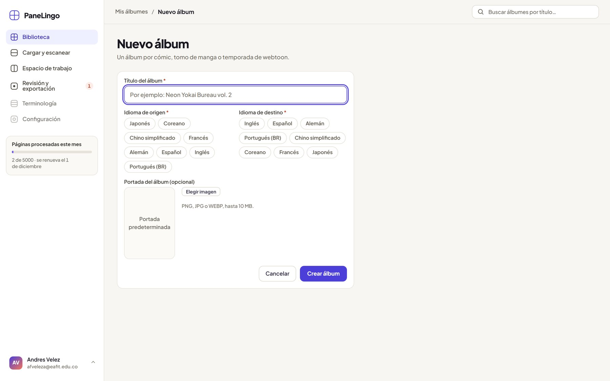
El detalle del álbum
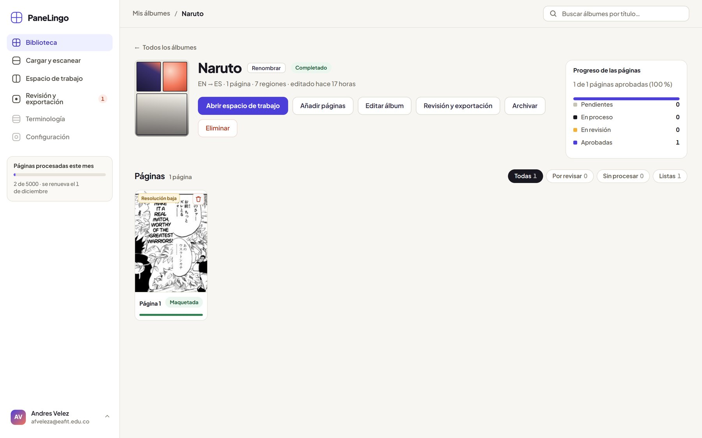
Detalle de un álbum: progreso, desglose por estado, acciones y la cuadrícula de páginas con su estado.
Editar, archivar y eliminar
Editar: cambia título, idiomas o portada desde Editar en el detalle o en el menú ··· de la tarjeta.
Archivar: oculta un álbum terminado sin borrarlo. Lo encuentras en el filtro Archivados y puedes desarchivarlo cuando quieras.
Eliminar: borra el álbum con todas sus páginas, textos y exportaciones. Te pide confirmación y no se puede deshacer.
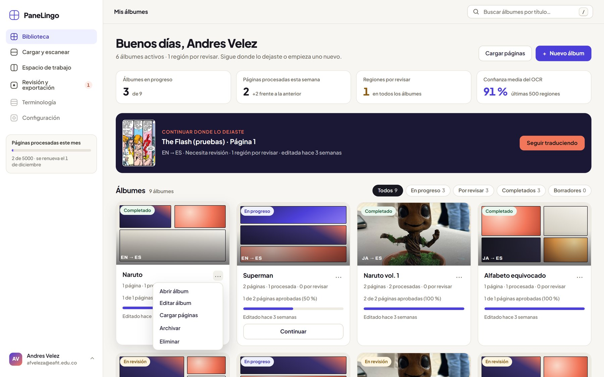
5
Capítulo 5
Cargar páginas
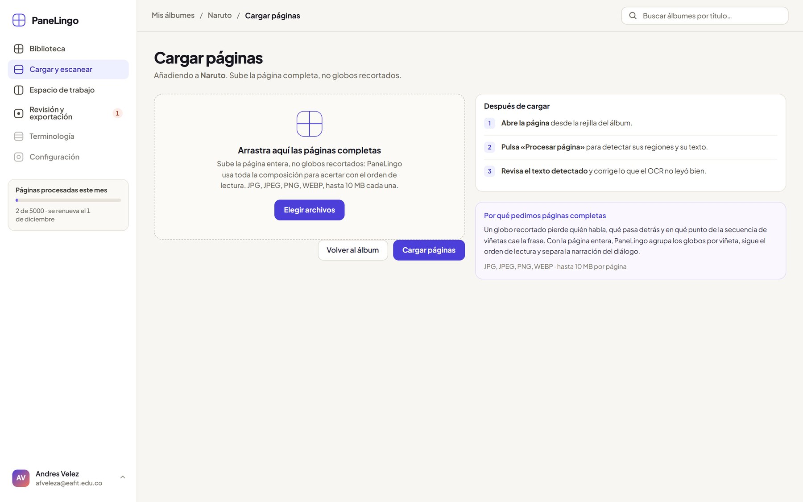
Desde el álbum pulsa Cargar páginas, o usa Cargar y escanear en el menú y elige el álbum.
Arrastra las imágenes a la zona de carga o pulsa para seleccionarlas. Puedes subir varias a la vez; se numeran en el orden en que las eliges.
Revisa la lista de archivos y pulsa Cargar. Cada página aparece en el álbum como Pendiente de procesamiento.
Requisito
Valor
Qué pasa si no se cumple
Formato
JPG, JPEG, PNG o WEBP
El archivo se rechaza con un mensaje.
Tamaño máximo
10 MB por página
El archivo se rechaza; los demás se cargan.
Resolución recomendada
2 megapíxeles o más
Se carga igual, con un aviso de baja resolución: el OCR puede leer peor.
ConsejoEscanea a 300 ppp y sube la página completa, no viñetas recortadas. La IA traduce mejor cuando ve toda la escena.
Eliminar una página
Abre la página y elige Eliminar, o usa el botón de la miniatura en el álbum. Se borran la imagen y todo su trabajo. Las demás páginas conservan su número, así el hueco te recuerda qué página falta.
6
Capítulo 6
Detectar y corregir el texto
Al abrir una página entras al espacio de trabajo: la imagen a la izquierda y los textos a la derecha.
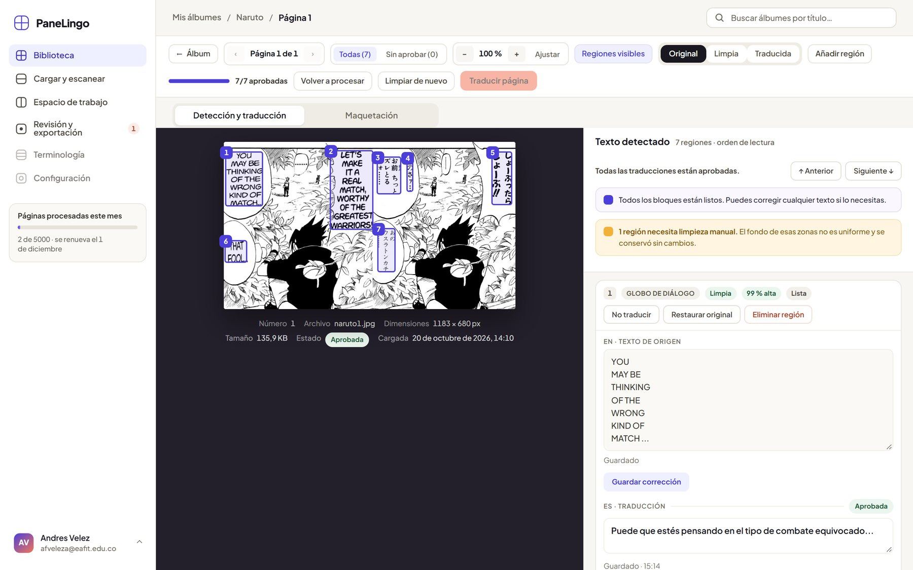
12345678
1Volver al álbum y pasar de una página a otra.
2Filtros de regiones y zoom (Ajustar encaja la página).
3Vista Original, Limpia o Traducida.
4Añadir región si el OCR pasó por alto un texto.
5Progreso de aprobación y acciones de la página.
6Pestañas Detección y traducción y Maquetación.
7Regiones numeradas en orden de lectura. Al pulsar una, se resalta su texto.
8Tarjeta de la región: tipo, confianza del OCR, texto de origen y traducción.
Procesar la página
Pulsa Procesar página. PaneLingo detecta los globos y cuadros de narración y lee su texto en segundo plano: puedes seguir trabajando y la vista se actualiza sola. Si el servicio falla, la página queda en Error con el botón Reintentar.
Revisar y corregir
Cada región muestra la confianza del OCR. Las de confianza baja se marcan Revisar y la página pasa a Necesita revisión.
Corrige el texto de origen y pulsa Guardar corrección. Si te equivocas, Restaurar original recupera lo que leyó el OCR.
Eliminar región quita un falso positivo (con opción de deshacer); No traducir conserva la región pero la deja fuera de la traducción, útil para firmas o letreros.
Volver a procesar repite la detección. Te avisa de cuántas correcciones se perderán antes de hacerlo.
Añadir una región a mano
Pulsa Añadir región.
Dibuja un rectángulo sobre el texto con el ratón, o escribe sus coordenadas en el formulario si prefieres el teclado.
Indica si es globo de diálogo o narración y guarda. PaneLingo lee el texto de ese recorte y la región entra en el orden de lectura.
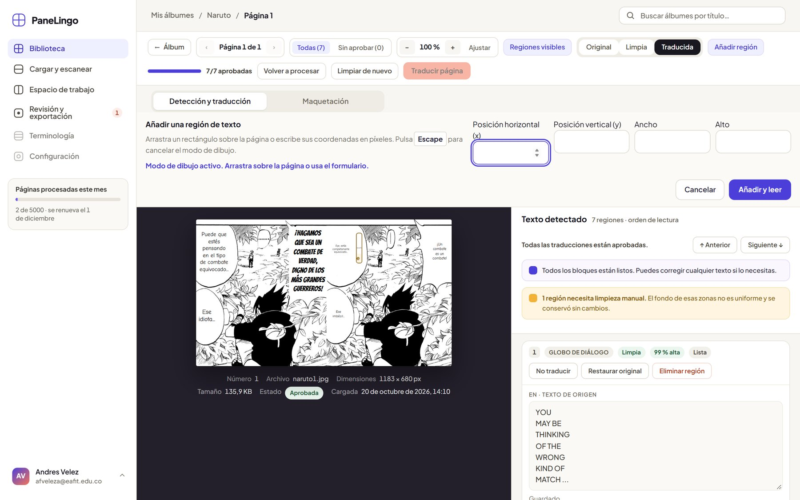
Una página con dudas
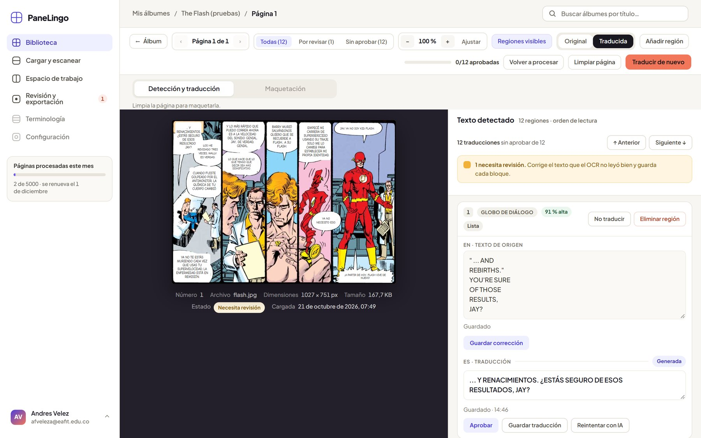
Una página en «Necesita revisión»: el aviso y el filtro Por revisar te llevan directo a los textos dudosos.
Guardado automáticoTodo lo que escribes se guarda solo, en segundos, y verás «Guardado» con la hora. Si se pierde la conexión, PaneLingo reintenta. Si abres la misma página en dos pestañas y cambias el mismo texto, la pestaña antigua no pisa el cambio más reciente: te avisa del conflicto.
7
Capítulo 7
Traducir y aprobar
La traducción se pide para la página entera. La IA recibe todas las regiones en orden de lectura y devuelve una propuesta para cada una.
Pulsa Traducir página. Verás «Traduciendo la página…» y podrás seguir usando PaneLingo mientras tanto.
Cada región muestra su propuesta en ES · Traducción con la etiqueta Generada.
Lee el texto de origen y la propuesta lado a lado. Edita lo que quieras: se guarda solo y pasa a Editada.
Cuando estés conforme, pulsa Aprobar. La región queda Aprobada y una nueva traducción automática ya no la cambiará.
Con todas las regiones aprobadas, la página pasa a Aprobada y cuenta para el progreso del álbum.
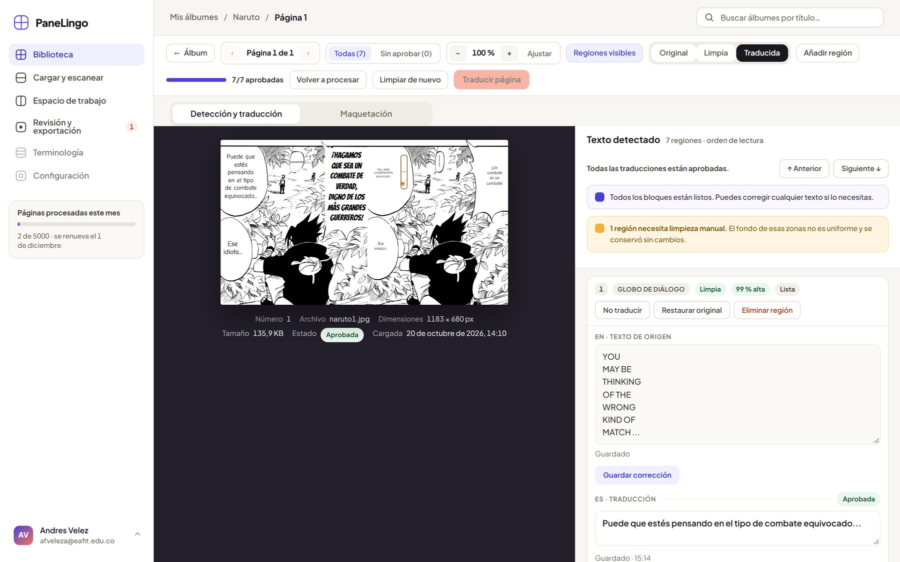
Vista «Traducida»: la página con las traducciones superpuestas y, a la derecha, el texto de origen y su traducción aprobada.
Reintentar con IA
Pide otra propuesta solo para una región, sin tocar las demás. La IA sigue viendo la página completa como contexto.
Retirar aprobación
Si necesitas cambiar una traducción aprobada, retira la aprobación, edítala y vuelve a aprobarla.
ConsejoUsa ↑ Anterior y Siguiente ↓ para recorrer las regiones en orden de lectura, y el filtro Sin aprobar para ver solo lo pendiente.
8
Capítulo 8
Limpiar y maquetar la página
Con las traducciones aprobadas, PaneLingo puede devolverlas a la imagen: primero borra el texto original y después coloca la traducción con el estilo que elijas.
1. Limpiar el texto original
Pulsa Limpiar página. Se crea una copia limpia de la página, sin el texto original de los globos; la imagen original nunca se modifica. Compara el resultado con las vistas Original, Limpia y Traducida.
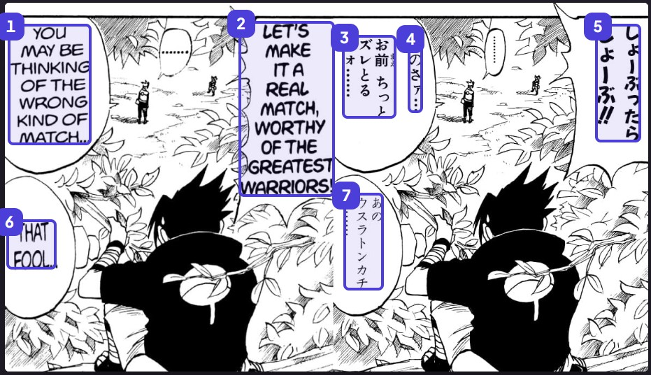
Original: la página tal como se cargó.
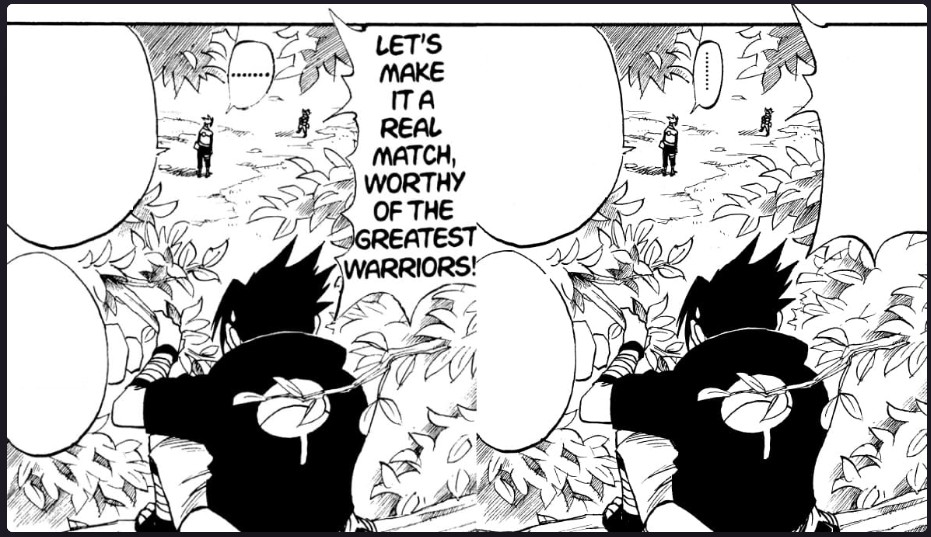
Limpia: los globos quedan en blanco.
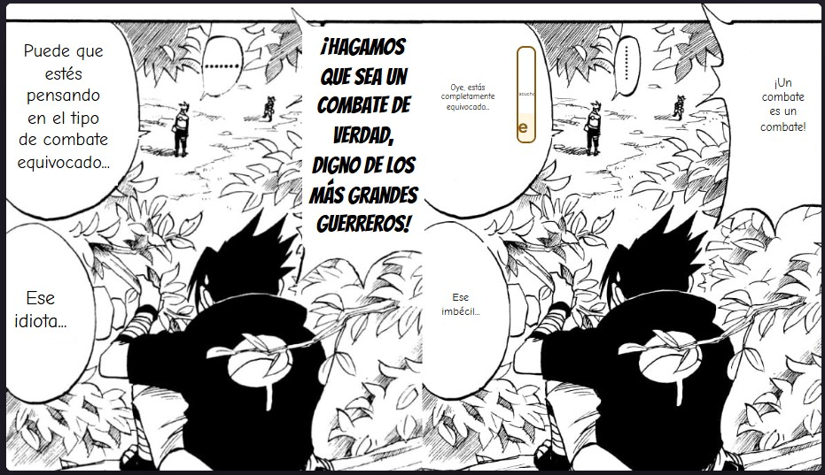
Traducida: la traducción en su lugar, con fondo blanco donde el original no se pudo borrar.
Limpieza manualSi un texto está sobre el dibujo y no sobre un fondo liso, PaneLingo no lo borra para no dañar la ilustración: lo marca como Limpieza manual y, para que se lea bien, coloca automáticamente un fondo blanco detrás de su traducción, que tapa el texto original. Puedes cambiarlo en la opción Fondo del editor.
2. Maquetar la traducción
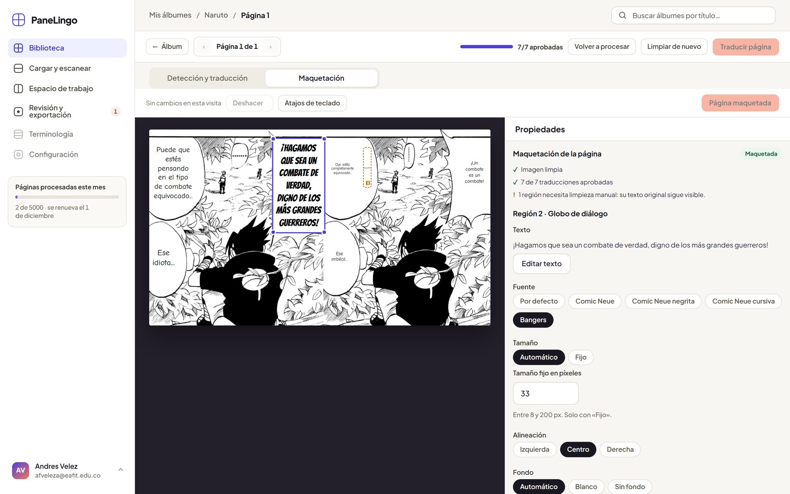
12345
1Deshacer (hasta 20 pasos) y la lista de atajos de teclado.
2Aprobar página: la marca como Maquetada.
3Selecciona un texto con un clic o con Tab. Arrástralo para moverlo y usa las esquinas para cambiar su caja.
4Lista de comprobación: imagen limpia, traducciones aprobadas y avisos.
5Propiedades del texto: fuente, tamaño automático o fijo, alineación, fondo (automático, blanco o sin fondo) y color. Restablecer vuelve a la caja y el estilo iniciales.
Fuentes disponibles
Comic Neue
La fuente por defecto para diálogos: clara y con aire de cómic. Disponible en normal, negrita y cursiva.
BANGERS
Para gritos, títulos y efectos de sonido. Úsala con moderación.
Todas las fuentes tienen licencia libre SIL OFL, así que puedes publicar las páginas sin costos de licencia.
Atajos de teclado del editor
Atajo
Acción
Tab o clic
Seleccionar un texto
←→↑↓
Mover el texto 1 píxel
Mayús + flechas
Mover el texto 10 píxeles
Alt + flechas
Cambiar el tamaño de la caja
Enter o doble clic
Editar el texto sobre la imagen
Ctrl + Enter · Escape
Guardar el texto · cancelar la edición
Ctrl + Z
Deshacer
Lo que ves es lo que exportasLa vista previa, el editor y la exportación usan el mismo motor de maquetación. Si un texto no cabe en su caja, el editor muestra «El texto no cabe»: agranda la caja, reduce el tamaño o acorta la frase.
3. Aprobar la maquetación
Cuando la página se vea bien, pulsa Aprobar página. Si después cambias algo, la página vuelve a quedar sin aprobar para que la revises de nuevo.
9
Capítulo 9
Exportar el resultado
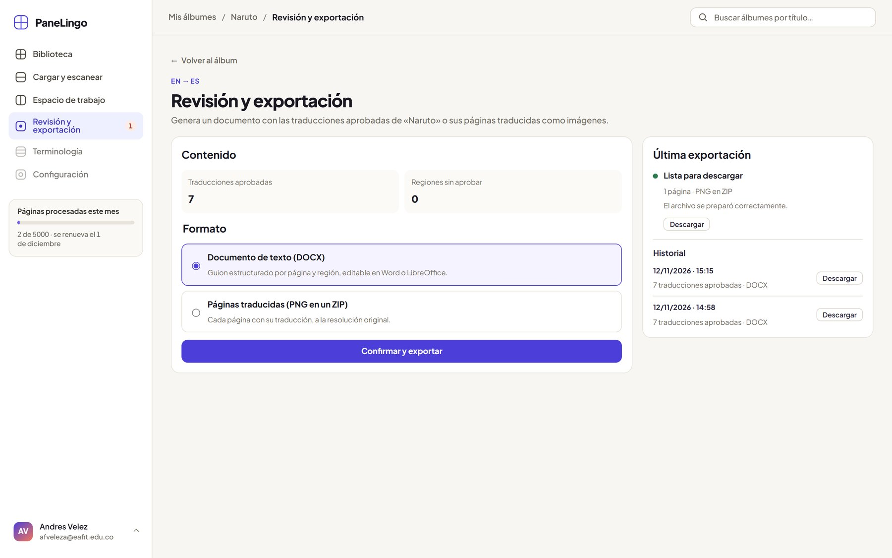
Abre Revisión y exportación desde el menú o desde el álbum.
Revisa el contenido: cuántas traducciones aprobadas se exportarán y cuántas regiones siguen sin aprobar (estas no se incluyen).
Elige el formato y pulsa Confirmar y exportar. El archivo se prepara en segundo plano.
Cuando aparezca Lista para descargar, pulsa Descargar.
Documento de texto (DOCX)
Un guion por página y región con el texto de origen y la traducción aprobada. Se abre en Word, Google Docs o LibreOffice. Ideal para entregar a un editor o rotulista.
Páginas traducidas (PNG en un ZIP)
Cada página con su traducción maquetada, a la resolución de la original. Ideal para publicar.
El historial guarda cada exportación con su fecha. Cada una es una foto fija del momento en que la confirmaste: si después cambias una traducción, las exportaciones anteriores no cambian. Las descargas son privadas y solo funcionan con tu sesión iniciada.
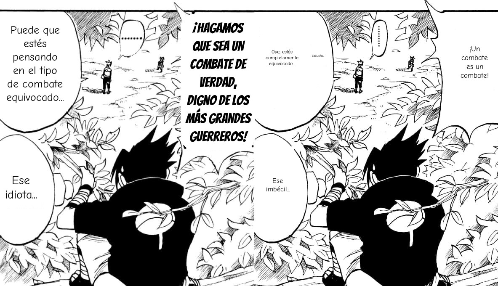
Una página del ZIP exportado, lista para publicar.
NombreEl ZIP se llama álbum_idioma_fecha_png.zip y sus imágenes pagina-001.png, pagina-002.png…
10
Capítulo 10
Estados y progreso
Estados de una página
Estado
Significado
Pendiente de procesamiento
Recién cargada. Pulsa Procesar página.
Procesando
El OCR está leyendo el texto. Se actualiza sola.
Procesada
Texto detectado sin dudas; falta traducir y aprobar.
Necesita revisión
Hay regiones con confianza baja que conviene revisar.
Aprobada
Todas sus traducciones están aprobadas.
Maquetada
Además, aprobaste cómo se ve la traducción sobre la imagen.
Error
Falló el procesamiento. Usa Reintentar.
Estados de un álbum
El estado de un álbum se calcula solo a partir de sus páginas; no se elige a mano.
Estado
Cuándo aparece
Borrador
El álbum todavía no tiene páginas.
En progreso
Alguna página falta por procesar o se está procesando.
En revisión
Todas las páginas están procesadas, pero alguna no está aprobada.
Completado
Todas las páginas están aprobadas.
El progreso
La barra de cada álbum mide páginas aprobadas sobre páginas totales. Un álbum de 4 páginas con 1 aprobada está al 25 %, aunque las demás tengan muchas regiones listas.
11
Capítulo 11
Uso en el celular y accesibilidad
PaneLingo se adapta a pantallas pequeñas: el menú lateral se convierte en una barra inferior y los paneles se apilan.
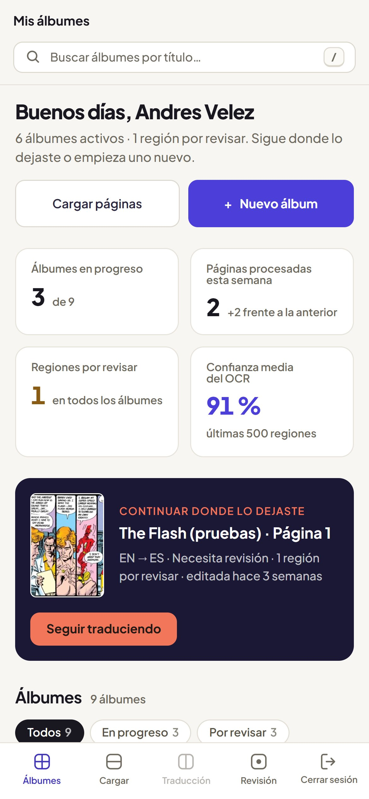
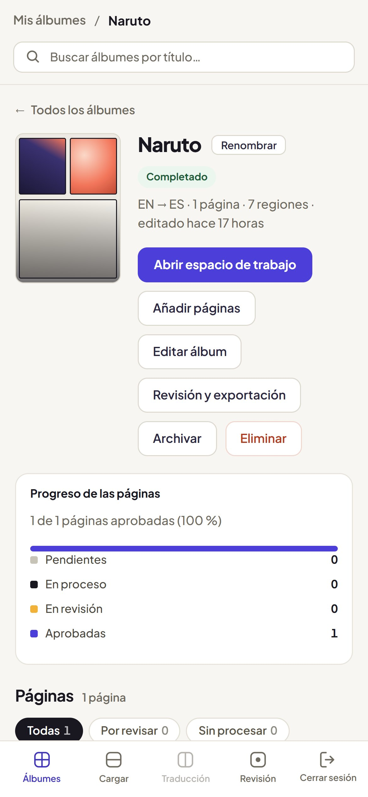
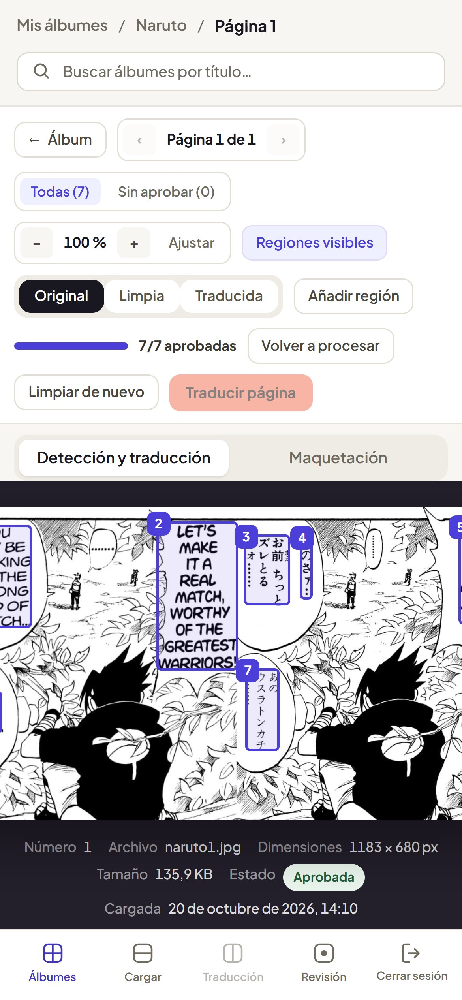
RecomendaciónRevisar, corregir y aprobar textos funciona bien en el celular. Para maquetar con precisión, mejor usa un computador con ratón o teclado.
Accesibilidad
Toda la aplicación se puede usar solo con el teclado: Tab para avanzar, Enter para activar y Escape para cerrar ventanas.
El foco siempre es visible con un contorno morado.
Los avisos se anuncian a los lectores de pantalla sin interrumpir la lectura.
Si tu sistema pide reducir el movimiento, PaneLingo desactiva las animaciones.
12
Capítulo 12
Preguntas frecuentes
Situación
Qué hacer
La página se quedó «Procesando» mucho tiempo.
Espera unos minutos; si pasan más de cinco, la página pasa a Error y puedes Reintentar.
El OCR no encontró un globo.
Usa Añadir región y dibújalo a mano.
El OCR marcó algo que no es texto.
Eliminar región; si te equivocas, pulsa Deshacer en el aviso.
No quiero traducir una firma o un letrero.
Marca la región como No traducir.
La traducción falló.
Aparece un aviso con Reintentar. Las traducciones aprobadas no se pierden.
«Aprobar» está deshabilitado.
La región no tiene traducción: tradúcela con IA o escríbela.
Quedó texto original visible tras limpiar.
Es una región de limpieza manual: en el editor, elige Fondo › Blanco y ajusta la caja para taparlo.
«El texto no cabe».
Agranda la caja, cambia a un tamaño fijo menor o acorta la frase.
No puedo exportar.
Necesitas al menos una traducción aprobada.
Abrí la misma página en dos pestañas.
PaneLingo evita que una pise a la otra y te avisa; recarga la pestaña antigua.
Olvidé mi contraseña.
Usa ¿Olvidaste tu contraseña? (capítulo 2).
Un álbum ya no lo uso.
Archívalo en lugar de eliminarlo: no ocupa espacio en tu biblioteca y no se pierde.
Glosario
Región
Zona de la página con texto: un globo de diálogo o un cuadro de narración.
OCR
Reconocimiento óptico de caracteres: lee el texto que hay en la imagen.
Confianza
Qué tan seguro está el OCR de lo que leyó, de 0 a 100 %.
Orden de lectura
El orden en que se leen las regiones, de derecha a izquierda en manga.
Tu obra, tuya.
Las páginas que cargas en PaneLingo no salen de tu cuenta. La IA propone, tú decides.